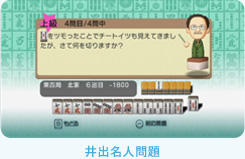

「健康麻将（けんこうまーじゃん）」とはどういったものでしょうか？
囲碁や将棋やテニスやゴルフのように、マージャンを誰もが楽しめる競技にしようというのが「健康麻将」の趣旨です。元々は、敬老の日にお年寄りの方にマージャンを楽しんでいただく「敬老麻雀」というイベントを行っていたのですが、お年寄りだけでなく幅広い年代の方に楽しんでいただこうと、「健康麻将」という名前になりました。
ルールは「麻雀」とは違うのですか？
同じです。ただ麻雀というのは基本のルールが同じでも、世代や地域によってマナーやルールがさまざまに存在します。そこを統一して、最もベーシックと思われるルールに統一したのが「健康麻将」です。
そもそも「麻雀」と「麻将」、字が違うのはなぜですか？
昔は「健康麻雀」だったのですが、あるとき中国と文化交流を行った際に、北京語ではマージャンのことを「麻将」と書くことを知りました。日本と同じく、中国でもマージャンは世代や地域ごとにルールが異なっていたようで、それを統一しようという運動が国を挙げて行われ、その結果、国家体育総局制定の麻将ルールができたのです。われわれの活動もそれにあやかり「麻将」の字を使うことになりました。
今回、『役満Ｗｉｉ』を監修することになったきっかけを教えてください。
最初は「この状況でどの牌を切りますか？」という簡単な問題を作成するというところからお付き合いが始まりました。これまでいろいろなマージャンゲームに携わってきたのですが、私の中でゲームでは限界だと感じていた部分がありました。それは対戦相手となるコンピュータのアルゴリズム（ＡＩ）です。それをなんとかできないかと思っていました。そういったことをお話しているうちに、開発スタッフの方が私の悩みに応えるソフトを作りたくなったんでしょうね。問題だけでなく、アルゴリズム作成にも関わって欲しいということになりました。実は今までアルゴリズム作成に携わったことはなかったんですが、もしかするとその限界だと思っていたこともなんとかなるかもしれないと思って協力しました。ついには私のキャラクターまで登場し、タイトルも『役満Ｗｉｉ 井出洋介の健康麻将』になったんです。
具体的にどのような点に限界を感じられていたのでしょうか。
例えば、コンピュータ相手にマージャンをされることが多い方が、実際に人とマージャンをされると何か違和感を受けるようなのです。対局相手がコンピュータの場合、４人の勝負ではなく、プレイヤーとコンピュータとの１対１になってしまっていたんですね。そうならないよう、コンピュータのアルゴリズムについてアドバイスしました。また、対局中のサポートや「安全牌予測」の仕組みなどにもアイデアを出させてもらいました。
ちなみにマージャンって、あがれるのは４人のうち１人しかいないでしょう？ 残り３／４はあがれない、勝つよりも負ける確率の方が高いゲームなんです。ただし、負けた場合でも最下位でなければ後の対局で挽回はできるはずなので、一局一局、いかに勝つかを考えるよりも、いかに負けないようにするかを考えた方が効果的なんです。そういったことを、ゲームソフトでも伝えられないかという思いを込めて監修を行っています。
作成された問題についてはいかがでしょうか。
「井出名人問題」という名前で「どの牌を捨てるべきか？」を考える問題を用意しています。上級問題だと、複雑なシチュエーションも出てきます。例えば、必ずしもあがりに向かう打ち方ではないような。点数を見て牌を選ぶような問題も出てきますね。
